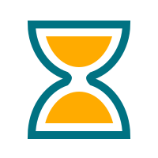

<!--
  This template loads for the 'tab.friend-detail' state (app.js)
  'friend' is a $scope variable created in the FriendsCtrl controller (controllers.js)
  The FriendsCtrl pulls data from the Friends service (service.js)
  The Friends service returns an array of friend data
-->
<ion-view view-title="Train Model">
  <ion-content class="padding">
   <div class="list">
      <label class="item item-input item-select">
        <div class="input-label">
          Model
        </div>
       <select ng-model="selectedmodel" >
           <option ng-selected="{{modelList[1].modelName}}" ng-repeat="model in modelList" value="{{model.modelName}}">{{model.modelName}}</option>
      </select>
      </label>
      <button class="button button-full button-calm" ng-click="OnTrainModel(selectedmodel)">Train</button>
     <div class="svgClass" ng-show="svg" id="svgDiv">
         
     </div>
   </div>
  </ion-content>
</ion-view>
